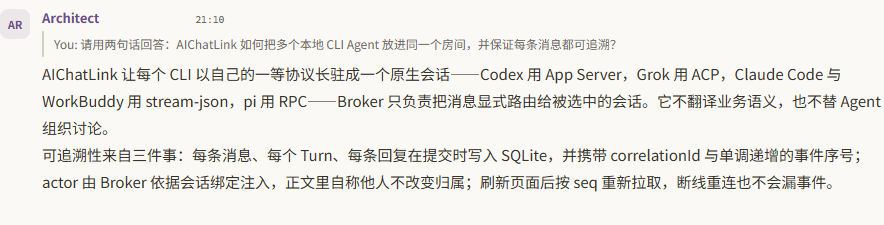
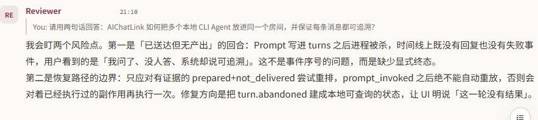
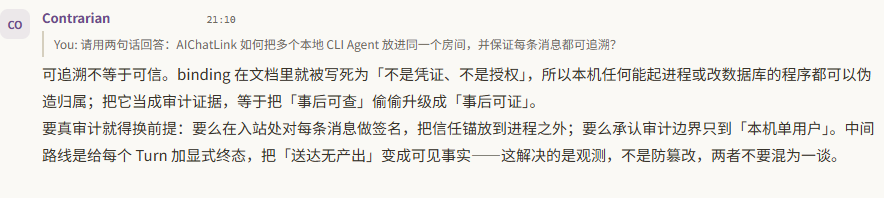

显式选择
从 Web UI 选择一个、多个或全部 Agent；正文里的自然语言 @ 不会偷偷触发新回合。
LOCAL · STRUCTURED · AUDITABLE
把 Codex、Grok、Claude Code、pi 和 WorkBuddy 放进同一个本地房间。显式路由、共享时间线、持久化记忆，以及能被追踪的每一个 Turn。
npm ci && npm run build && npm start
LOCAL ROOM · SAME SHELL
同一个 AIChatLink 房间，三个独立 Agent 会话分别担任 Architect（架构提案）、Reviewer（风险审查）与 Contrarian（反证批判），对同一道问题给出各自的答案，并由 Broker 统一持久化。



界面截图：本仓库构建的真实界面；问题与回复由测试夹具生成，不含真实对话与本机数据。
HOW IT WORKS
从 Web UI 选择一个、多个或全部 Agent；正文里的自然语言 @ 不会偷偷触发新回合。
Codex App Server、Grok ACP、Claude Code 与 WorkBuddy 的 stream-json、pi 的 RPC 各自保持原生会话，Broker 统一管理路由、取消与恢复。
最终回复、Turn 状态、推理与工具记录按数据类型落盘，刷新后仍可回放和审计。
START LOCAL
$ npm ci && npm run build && npm link $ aichatlink start AIChatLink Agent 配置引导页: http://127.0.0.1:4310/ AIChatLink listening · transport=structured
在仓库根执行。@aiyao/aichatlink 尚未发布到 npm，因此现阶段以源码构建为主；需要一个能在任意目录调用的 aichatlink 命令时加上 npm link。